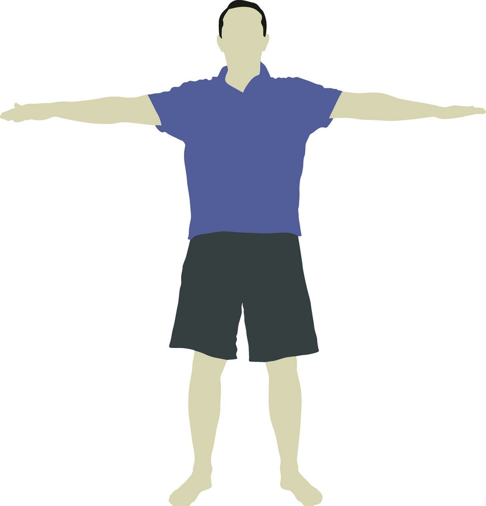

Intructions to follow for automated body Measurements
- Tie your hair and wear a fitting clothes
- Use a White background
- Pose for the photo as shown in below image
- Upload a clear photo for accurate measurements
- You will be asked for permissoion to use your webcam to vitrual try-on experience
